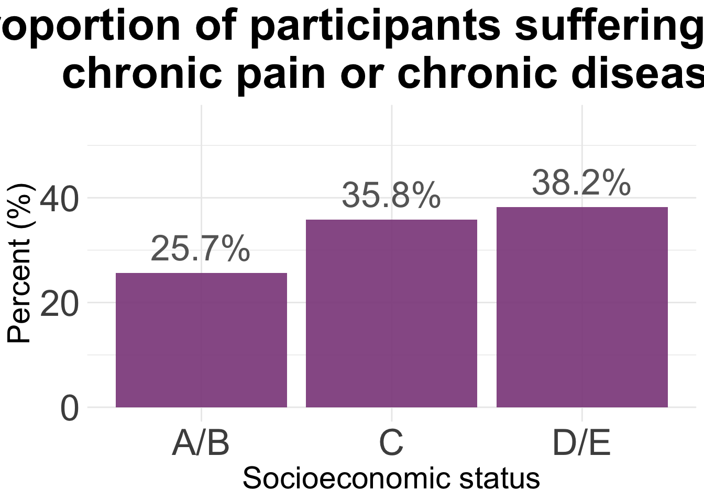

Last updated: 2025-04-09
Checks: 7 0
Knit directory: QUAIL-Mex/
This reproducible R Markdown analysis was created with workflowr (version 1.7.1). The Checks tab describes the reproducibility checks that were applied when the results were created. The Past versions tab lists the development history.
Great! Since the R Markdown file has been committed to the Git repository, you know the exact version of the code that produced these results.
Great job! The global environment was empty. Objects defined in the global environment can affect the analysis in your R Markdown file in unknown ways. For reproduciblity it’s best to always run the code in an empty environment.
The command set.seed(20241009) was run prior to running
the code in the R Markdown file. Setting a seed ensures that any results
that rely on randomness, e.g. subsampling or permutations, are
reproducible.
Great job! Recording the operating system, R version, and package versions is critical for reproducibility.
Nice! There were no cached chunks for this analysis, so you can be confident that you successfully produced the results during this run.
Great job! Using relative paths to the files within your workflowr project makes it easier to run your code on other machines.
Great! You are using Git for version control. Tracking code development and connecting the code version to the results is critical for reproducibility.
The results in this page were generated with repository version 0fc4ea4. See the Past versions tab to see a history of the changes made to the R Markdown and HTML files.
Note that you need to be careful to ensure that all relevant files for
the analysis have been committed to Git prior to generating the results
(you can use wflow_publish or
wflow_git_commit). workflowr only checks the R Markdown
file, but you know if there are other scripts or data files that it
depends on. Below is the status of the Git repository when the results
were generated:
Ignored files:
Ignored: .DS_Store
Ignored: .RData
Ignored: .Rhistory
Ignored: .Rproj.user/
Ignored: analysis/.DS_Store
Ignored: analysis/.RData
Ignored: analysis/.Rhistory
Ignored: analysis/Hrs_by_HWISE score.png
Ignored: analysis/odds_ratio_plot.png
Ignored: analysis/stacked_barplot.png
Ignored: code/.DS_Store
Ignored: data/.DS_Store
Unstaged changes:
Modified: analysis/UROP_Alexandra.Rmd
Modified: analysis/UROP_Brittany.Rmd
Note that any generated files, e.g. HTML, png, CSS, etc., are not included in this status report because it is ok for generated content to have uncommitted changes.
These are the previous versions of the repository in which changes were
made to the R Markdown
(analysis/Plots_Latinx_research_week.Rmd) and HTML
(docs/Plots_Latinx_research_week.html) files. If you’ve
configured a remote Git repository (see ?wflow_git_remote),
click on the hyperlinks in the table below to view the files as they
were in that past version.
| File | Version | Author | Date | Message |
|---|---|---|---|---|
| Rmd | c9896b1 | Paloma | 2025-02-25 | ses-health |
| html | c9896b1 | Paloma | 2025-02-25 | ses-health |
| Rmd | 44474e3 | Paloma | 2025-02-22 | Create Plots_Latinx_research_week.Rmd |
#Loading file and setting empty cells as "NAs"
d <- read.csv("./data/01.SCREENING.csv", stringsAsFactors = TRUE, na.strings = c("", " ","NA", "N/A"))
# extract duplicates and compare values (removed manually for now)
dup <- d$ID[duplicated(d$ID)]
length(dup) # 38[1] 138print(dup) [1] 2 3 9 22 24 25 26 27 30 33 44 46 70 75 96 102 103 128
[19] 146 162 163 163 167 180 190 191 201 202 301 301 302 302 303 304 305 306
[37] 307 308 309 310 310 311 312 313 314 315 316 317 318 319 320 320 321 322
[55] 323 323 324 325 326 327 328 329 330 330 331 332 333 334 334 335 336 337
[73] 338 339 340 341 342 343 344 345 353 353 362 364 365 366 367 368 369 370
[91] 371 372 373 374 375 376 377 378 379 380 381 382 383 384 385 386 387 388
[109] 389 390 391 393 394 395 402 415 427 427 439 453 463 463 471 476 483 483
[127] 483 485 487 488 489 490 492 492 494 495 496 497# remove duplicates
d <- d[!duplicated(d$ID),]
# confirm total number of participants
length(unique(d$ID)) # 433 rows, but 394 participants[1] 399# What numbers are missing?
ID <- as.ordered(d$ID)
# first trip
setdiff(1:204, ID)[1] 71 164nrow(d[d$ID <=250,])[1] 202# second trip
setdiff(301:497, ID)integer(0)nrow(d[d$ID >=250,])[1] 197nrow(d)[1] 399 #make ID number the row names
rownames(d) <- d$ID
# Code NAs
d[d=='NA'] <- NA
d <- d %>%
replace_na()
# Count rows with NAs
nrow(d[rowSums(is.na(d)) > 0,]) # 12 rows[1] 399nrow(d[!complete.cases(d),]) # 12 rows[1] 399#NAs <- d[rowSums(is.na(d))> 0,]
#write.table(NAs, "240301_SES_Age_NAs.csv", row.names=FALSE)
# Select useful information
d <- d %>%
select(ID, SES_EDU_SC, SES_BTHR_SC, SES_CAR_SC, SES_INT_SC, SES_WRK_SC, SES_BEDR_SC)
# transform factors to numbers
for (i in c(2:length(d))) {
d[,i] <- as.numeric(as.character(d[,i]))
}Warning: NAs introduced by coercion
Warning: NAs introduced by coercion# Keep rows with no missing data
d <- d[complete.cases(d),] # - 9 (dup) # total 382 complete cases, total 394
nrow(d)[1] 349head(d) ID SES_EDU_SC SES_BTHR_SC SES_CAR_SC SES_INT_SC SES_WRK_SC SES_BEDR_SC
1 1 10 24 0 31 61 23
2 2 31 47 18 31 46 23
3 3 31 0 0 0 15 6
4 4 73 47 0 31 46 17
5 5 35 24 0 31 15 12
6 6 73 47 0 31 46 23#write.csv(d, paste("./cleaned/", date, "_SES_clean.csv", sep=""))
# Calcular total SES score
d$SES_score <- rowSums(d[2:7], na.rm = TRUE)
# SES categories
d$SES <- ifelse(d$SES_score <= 47,"E",
ifelse(d$SES_score <= 89, "D-/E",
ifelse(d$SES_score <= 111, "D",
ifelse(d$SES_score <= 135, "C-",
ifelse(d$SES_score <= 165, "C",
ifelse(d$SES_score <= 204, "C+",
"A/B"))))))
head(d) ID SES_EDU_SC SES_BTHR_SC SES_CAR_SC SES_INT_SC SES_WRK_SC SES_BEDR_SC
1 1 10 24 0 31 61 23
2 2 31 47 18 31 46 23
3 3 31 0 0 0 15 6
4 4 73 47 0 31 46 17
5 5 35 24 0 31 15 12
6 6 73 47 0 31 46 23
SES_score SES
1 149 C
2 196 C+
3 52 D-/E
4 214 A/B
5 117 C-
6 220 A/B#Loading file and setting empty cells as "NAs"
c <- read.csv("./data/Chronic_pain_illness.csv", stringsAsFactors = TRUE, na.strings = c("", " ","NA", "N/A"))
c$chronic <- as.factor(ifelse(c$HLTH_CPAIN_CAT == 1 | c$HLTH_CDIS_CAT == 1, "Yes", "No"))
m <- merge(d,c, by="ID")
dim(m)[1] 349 12m[m =='NA'] <- NA
m <- m %>%
replace_na()
m <- m %>%
drop_na()
m %>%
select(ID, SES, chronic) %>%
group_by(SES) %>%
summarise(n_total = n())# A tibble: 7 × 2
SES n_total
<chr> <int>
1 A/B 26
2 C 77
3 C+ 48
4 C- 85
5 D 51
6 D-/E 49
7 E 10agg<- count(m, SES, chronic)
agg2 <- pivot_wider(agg,
names_from = chronic,
values_from = n)
agg2$Total <- agg2$Yes/(agg2$Yes + agg2$No)*100
#png(file= "HLTH_counts_by_SES.png", width = 700, height = 800 )
ggplot(agg2, aes(x = SES, y = Total)) +
geom_bar(stat= "identity", fill = "orchid4", alpha = 0.9) +
ylim(0, 55) +
theme_minimal() +
geom_text(aes(label = paste(round(Total, 1), "%", sep="")),
vjust = -0.5,
colour = "gray40",
size = 9) +
theme(
plot.title = element_text(hjust = 0.5,
size = 32, face = "bold"),
axis.title = element_text(size = 22),
axis.text = element_text(size = 26)
) +
labs(title="Proportion of participants suffering from \n chronic pain or chronic disease") +
xlab("Socioeconomic status") +
ylab("Percent (%)") 
| Version | Author | Date |
|---|---|---|
| c9896b1 | Paloma | 2025-02-25 |
#dev.off()f<-read.csv("./data/02.HWISE_PSS.csv")
# Add more info to file
dim(f)[1] 398 33f$ID <- as.factor(f$ID)
# Calculate total score PSS per participant
f$t_pss <- 0
# change positive statements to negative values
pss <- c(20, 21, 22, 23, 25, 26, 29)
for (i in pss) {f[i] <- f[i]*-1 }
for (i in 1:nrow(f)) {
sum(f[i, c(18:31)]) -> f$Total_PSS[i]
}
summary(f$Total_PSS) Min. 1st Qu. Median Mean 3rd Qu. Max. NA's
-13.000 -5.000 -2.000 -2.558 0.000 6.000 4 pss <- merge(m,f, by="ID")
dim(pss)[1] 345 46pss[pss =='NA'] <- NA
pss %>%
select(ID, SES, chronic, Total_PSS) %>%
drop_na(Total_PSS) %>%
group_by(SES, chronic) %>%
summarise(n_total = n(), mean = mean(Total_PSS))`summarise()` has grouped output by 'SES'. You can override using the `.groups`
argument.# A tibble: 14 × 4
# Groups: SES [7]
SES chronic n_total mean
<chr> <fct> <int> <dbl>
1 A/B No 21 -2.43
2 A/B Yes 5 -2.2
3 C No 41 -3.24
4 C Yes 34 -1.97
5 C+ No 34 -2.91
6 C+ Yes 13 -3.69
7 C- No 61 -2.61
8 C- Yes 23 -2.70
9 D No 29 -2.45
10 D Yes 21 -3.19
11 D-/E No 33 -1.76
12 D-/E Yes 16 -3.38
13 E No 5 -1.4
14 E Yes 5 -4.6 agg<- count(pss, SES, chronic, Total_PSS)
agg2 <- pivot_wider(agg,
names_from = chronic,
values_from = n)
agg2$Total <- agg2$Yes/(agg2$Yes + agg2$No)*100
png(file= "HLTH_counts_by_SES.png", width = 700, height = 800 )
ggplot(agg2, aes(x = SES, y = Total)) +
geom_bar(stat= "identity", fill = "orchid4", alpha = 0.9) +
ylim(0, 55) +
theme_minimal() +
geom_text(aes(label = paste(round(Total, 1), "%", sep="")),
vjust = -0.5,
colour = "gray40",
size = 9) +
theme(
plot.title = element_text(hjust = 0.5,
size = 32, face = "bold"),
axis.title = element_text(size = 22),
axis.text = element_text(size = 26)
) +
labs(title="Proportion of participants suffering from \n chronic pain or chronic disease") +
xlab("Socioeconomic status") +
ylab("Percent (%)") Warning: Removed 89 rows containing missing values or values outside the scale range
(`geom_bar()`).Warning: Removed 52 rows containing missing values or values outside the scale range
(`geom_text()`).dev.off()quartz_off_screen
2
sessionInfo()R version 4.4.3 (2025-02-28)
Platform: aarch64-apple-darwin20
Running under: macOS Sequoia 15.4
Matrix products: default
BLAS: /Library/Frameworks/R.framework/Versions/4.4-arm64/Resources/lib/libRblas.0.dylib
LAPACK: /Library/Frameworks/R.framework/Versions/4.4-arm64/Resources/lib/libRlapack.dylib; LAPACK version 3.12.0
locale:
[1] en_US.UTF-8/en_US.UTF-8/en_US.UTF-8/C/en_US.UTF-8/en_US.UTF-8
time zone: America/Detroit
tzcode source: internal
attached base packages:
[1] grid stats graphics grDevices utils datasets methods
[8] base
other attached packages:
[1] RColorBrewer_1.1-3 viridis_0.6.5 viridisLite_0.4.2 plotly_4.10.4
[5] lubridate_1.9.3 forcats_1.0.0 stringr_1.5.1 dplyr_1.1.4
[9] purrr_1.0.2 readr_2.1.5 tidyr_1.3.1 tibble_3.2.1
[13] ggplot2_3.5.1 tidyverse_2.0.0 rmarkdown_2.29
loaded via a namespace (and not attached):
[1] sass_0.4.9 utf8_1.2.4 generics_0.1.3 stringi_1.8.4
[5] hms_1.1.3 digest_0.6.37 magrittr_2.0.3 timechange_0.3.0
[9] evaluate_1.0.1 fastmap_1.2.0 rprojroot_2.0.4 workflowr_1.7.1
[13] jsonlite_1.8.9 whisker_0.4.1 gridExtra_2.3 promises_1.3.0
[17] httr_1.4.7 fansi_1.0.6 scales_1.3.0 lazyeval_0.2.2
[21] jquerylib_0.1.4 cli_3.6.3 rlang_1.1.4 munsell_0.5.1
[25] withr_3.0.2 cachem_1.1.0 yaml_2.3.10 tools_4.4.3
[29] tzdb_0.4.0 colorspace_2.1-1 httpuv_1.6.15 vctrs_0.6.5
[33] R6_2.5.1 lifecycle_1.0.4 git2r_0.35.0 htmlwidgets_1.6.4
[37] fs_1.6.5 pkgconfig_2.0.3 pillar_1.9.0 bslib_0.8.0
[41] later_1.3.2 gtable_0.3.6 data.table_1.16.2 glue_1.8.0
[45] Rcpp_1.0.13-1 xfun_0.49 tidyselect_1.2.1 rstudioapi_0.17.1
[49] knitr_1.49 farver_2.1.2 htmltools_0.5.8.1 labeling_0.4.3
[53] compiler_4.4.3